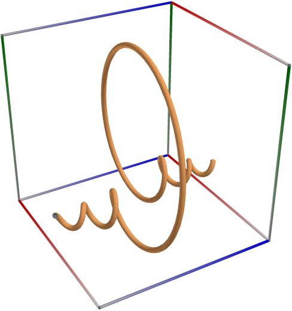
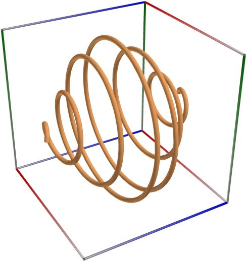
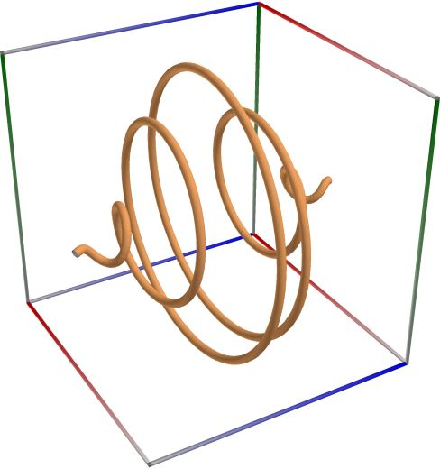
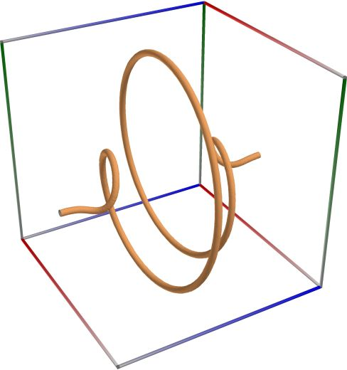
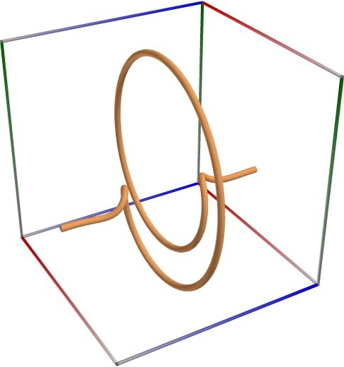
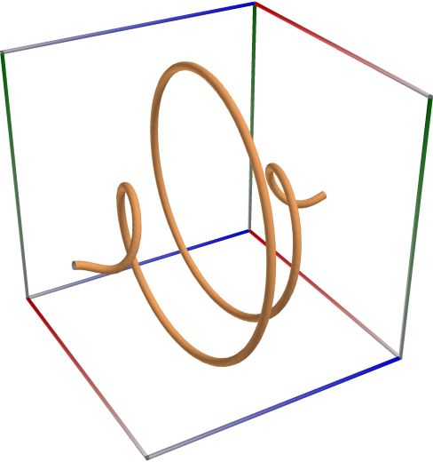
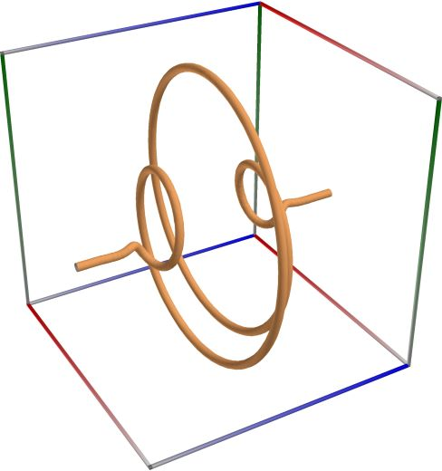
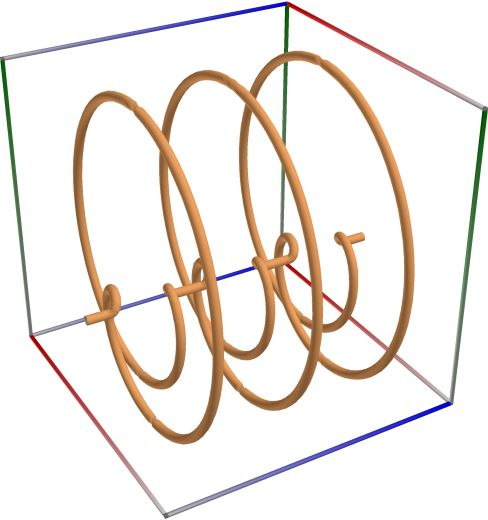

Characteristic functions of statistical distributions#
Uniform distribution#
The uniform distribution is a continuous probability distribution on the support interval \([a, b]\) with finite \(a < b\). See also Wikipedia [1285], MathWorld [911], BoostMath [95], Witkovský [1629], R (Statistical System) [562].
Returns \(C_X(t)\), the characteristic function of a random variable \(X\), following a uniform distribution:
An example in C#
double a = 0.0;
double b = 1.0;
Complex i1 = Complex.ImaginaryOne;
Complex fz = 1.0;
if (t != 0.0)
{
fz = Complex.Exp(i1 * t * b) - Complex.Exp(i1 * t * a);
fz /= (i1 * t * (b - a));
}
var y = fz.Real;
var z = -fz.Imaginary;
var x = t;
Below are 3D plots of this functions with different parameters, and \(t \in (t_0, t_1)\):

{kind=link}
Left figure: Characteristic function of the uniform distribution, with \(a=0.0\), \(b=1.0\), \(t_0=-20.0\) and \(t_1=20.0\). Perspective camera. Camera angles are \(\theta=120^\circ\) and \(\phi = 120^\circ\).
Middle figure: Characteristic function of the uniform distribution, with \(a=0\), \(b=1\), \(t_0=-2.0\) and \(t_1=2.0\). Perspective camera. Camera angles are \(\theta=120^\circ\) and \(\phi = 120^\circ\).
Right figure: Characteristic function of the uniform distribution, with \(a=0\), \(b=1\), \(t_0=-2.0\) and \(t_1=2.0\). Perspective camera. Camera angles are \(\theta=120^\circ\) and \(\phi = 120^\circ\).
Normal distribution#
The normal distribution is a continuous probability distribution with mean \(\mu \in \mathbb{R}\), standard deviation \(\sigma > 0\), and the support interval \((-\infty, +\infty)\). See also Wikipedia [1258], MathWorld [906], BoostMath [73], R (Statistical System) [552], Mpmath [569], Mpmath [565].
Returns \(C_X(t)\), the characteristic function of a random variable \(X\), following a normal distribution:
An example in C#
double mu = 10.0;
double sigma = 1.0;
Complex i1 = Complex.ImaginaryOne;
Complex fz = Complex.Zero;
fz = Complex.Exp(i1 * t * mu - 0.5 * sigma * sigma * t * t);
var y = fz.Real;
var z = -fz.Imaginary;
var x = t;
Below are 3D plots of this functions with different parameters, and \(t \in (t_0, t_1)\):

{kind=link}
Left figure: Characteristic function of the normal distribution, with \(\mu=10\), \(\sigma=1\), \(t_0=-2.0\) and \(t_1=2.0\). Perspective camera. Camera angles are \(\theta=120^\circ\) and \(\phi = 120^\circ\).
Middle figure: Characteristic function of the normal distribution, with \(\mu=0\), \(\sigma=1\), \(t_0=-2.0\) and \(t_1=2.0\). Perspective camera. Camera angles are \(\theta=120^\circ\) and \(\phi = 120^\circ\).
Right figure: Characteristic function of the normal distribution, with \(\mu=0\), \(\sigma=1\), \(t_0=-2.0\) and \(t_1=2.0\). Perspective camera. Camera angles are \(\theta=120^\circ\) and \(\phi = 120^\circ\).
Chi-squared distribution#
The chi-squared distribution is a continuous probability distribution with \(n > 0\) degrees of freedom and the support interval \((0,+\infty)\). See also Wikipedia [1240], MathWorld [869], BoostMath [59], Witkovský [1615], R (Statistical System) [547].
Returns \(C_X(t)\), the characteristic function of a random variable \(X\), following a chi-squared distribution:
An example in C#
double nu = 100.0;
Complex i1 = Complex.ImaginaryOne;
Complex fz = Complex.Zero;
fz = Complex.Pow(1 - 2 * i1 * t, -nu / 2);
var x = fz.Real;
var y = -fz.Imaginary;
var z = t;
Below are 3D plots of this functions with different parameters, and \(t \in (t_0, t_1)\):

{kind=link}
Left figure: Characteristic function of the chi-squared distribution, with \(n=100\), \(t_0=-0.2\) and \(t_1=0.2\). Perspective camera. Camera angles are \(\theta=120^\circ\) and \(\phi = 120^\circ\).
Middle figure: Characteristic function of the chi-squared distribution, with \(n=10\), \(t_0=-2.0\) and \(t_1=2.0\). Perspective camera. Camera angles are \(\theta=120^\circ\) and \(\phi = 120^\circ\).
Right figure: Characteristic function of the chi-squared distribution, with \(n=10\), \(t_0=-2.0\) and \(t_1=2.0\). Perspective camera. Camera angles are \(\theta=120^\circ\) and \(\phi = 120^\circ\).
Beta distribution#
The beta distribution is a continuous probability distribution with parameters \(a > 0\), \(b > 0\), and the support interval \((0, 1)\). See also Wikipedia [1238], MathWorld [868], BoostMath [57], Witkovský [1614], R (Statistical System) [545].
Returns \(C_X(t)\), the characteristic function of a random variable \(X\), following a beta distribution:
where \({}_1F_1()\) is Kummer’s confluent hypergeometric function (of the first kind).
An example in C#
double a = 10.0;
double b = 20.0;
Complex i1 = Complex.ImaginaryOne;
var fz = dcplx.zero();
fz = cmath53.hyperg_1f1(a, a + b, i1 * t);
var y = fz.Real;
var z = -fz.Imaginary;
var x = t;
Below are 3D plots of this functions with different parameters, and \(t \in (t_0, t_1)\):

{kind=link}
Left figure: Characteristic function of the beta distribution, with \(a=10\), \(b=20\), \(t_0=-40.0\) and \(t_1=40.0\). Perspective camera. Camera angles are \(\theta=120^\circ\) and \(\phi = 120^\circ\).
Middle figure: Characteristic function of the beta distribution, with \(a=20\), \(b=40\), \(t_0=-2.0\) and \(t_1=2.0\). Perspective camera. Camera angles are \(\theta=120^\circ\) and \(\phi = 120^\circ\).
Right figure: Characteristic function of the beta distribution, with \(a=20\), \(b=40\), \(t_0=-2.0\) and \(t_1=2.0\). Perspective camera. Camera angles are \(\theta=120^\circ\) and \(\phi = 120^\circ\).
F distribution#
The Fisher \(F\)-distribution is a continuous probability distribution with \(m > 0\) and \(n > 0\) degrees of freedom, and the support interval \((0, +\infty)\). See also Wikipedia [1243], MathWorld [872], BoostMath [62], Witkovský [1617], R (Statistical System) [549], Abramowitz and Stegun. [3], Butler and Paolella [173], Chattamvelli and Jones [182], Witkovský [1611].
Returns \(C_X(t)\), the characteristic function of a random variable \(X\), following a central Fisher F distribution:
where \(U(\cdot)\) denotes the confluent hypergeometric function of the second kind.
An example in C#
double nu = 21.0;
double mu = 40.0;
double G = math53.gamma(mu / 2 + nu / 2) / math53.gamma(nu / 2);
Complex i1 = Complex.ImaginaryOne;
var fz = dcplx.zero();
fz = G * cmath53.hyperg_u(mu / 2, 1 - nu / 2, -(nu / mu) * i1 * t);
var y = fz.Real;
var z = -fz.Imaginary;
var x = t;
Below are 3D plots of this functions with different parameters, and \(t \in (t_0, t_1)\):

{kind=link}
Left figure: Characteristic function of the Fisher \(F\)-distribution, with \(m=40\), \(n=20\), \(t_0=-20.0\) and \(t_1=20.0\). Perspective camera. Camera angles are \(\theta=120^\circ\) and \(\phi = 120^\circ\).
Middle figure: Characteristic function of the Fisher \(F\)-distribution, with \(m=20\), \(n=40\), \(t_0=-2.0\) and \(t_1=2.0\). Perspective camera. Camera angles are \(\theta=120^\circ\) and \(\phi = 120^\circ\).
Right figure: Characteristic function of the Fisher \(F\)-distribution, with \(m=20\), \(n=40\), \(t_0=-2.0\) and \(t_1=2.0\). Perspective camera. Camera angles are \(\theta=120^\circ\) and \(\phi = 120^\circ\).
Non-central Chi-squared distribution#
The noncentral chi-square distribution is a continuous probability distribution with degrees of freedom \(n>0\), noncentrality parameter \(\lambda_1\), and support interval \((0, \infty)\). See also Wikipedia [1256], MathWorld [881], Patnaik [487], Penev and Raykov [489], Wang and Gray [866], Winterbottom [1605], BoostMath [70], Witkovský [1625], Johansson [406], R (Statistical System) [542], Yu [1653].
Returns \(C_X(t)\), the characteristic function of a random variable \(X\), following a non-central chi-squared distribution:
An example in C#
double nu = 10.0;
double lambda1 = 50.0;
Complex i1 = Complex.ImaginaryOne;
Complex fz = Complex.Zero;
fz = Complex.Pow(1 - 2 * i1 * t, -nu / 2);
fz *= Complex.Exp((i1 * t * lambda1) / (1 - 2 * i1 * t));
var y = fz.Real;
var z = -fz.Imaginary;
var x = t;
Below are 3D plots of this functions with different parameters, and \(t \in (t_0, t_1)\):

{kind=link}
Left figure: Characteristic function of the noncentral chi-square distribution, with \(\lambda=50\), \(n=10\), \(t_0=-0.2\) and \(t_1=0.2\). Perspective camera. Camera angles are \(\theta=120^\circ\) and \(\phi = 120^\circ\).
Middle figure: Characteristic function of the noncentral chi-square distribution, with \(\lambda=20\), \(n=40\), \(t_0=-2.0\) and \(t_1=2.0\). Perspective camera. Camera angles are \(\theta=120^\circ\) and \(\phi = 120^\circ\).
Right figure: Characteristic function of the noncentral chi-square distribution, with \(\lambda=20\), \(n=40\), \(t_0=-2.0\) and \(t_1=2.0\). Perspective camera. Camera angles are \(\theta=120^\circ\) and \(\phi = 120^\circ\).
Binomial distribution#
The binomial distribution is a discrete (lattice) probability distribution with number of trials \(n \ge 0\) and success probability \(0 \le p \le 1\). See also Wikipedia [1265], MathWorld [889], BoostMath [77], Witkovský [1633], R (Statistical System) [556].
Returns \(C_X(t)\), the characteristic function of a random variable \(X\), following an binomial distribution:
An example in C#
double n1 = 20.0;
double p = 0.5;
Complex i1 = Complex.ImaginaryOne;
Complex fz = Complex.Zero;
fz = Complex.Pow(1 - p + p * Complex.Exp(i1 * t), n1);
var x = fz.Real;
var y = -fz.Imaginary;
var z = t;
Below are 3D plots of this functions with different parameters, and \(t \in (t_0, t_1)\):

{kind=link}
Left figure: Characteristic function of the binomial distribution, with \(p=0.5\), \(n=20\), \(t_0=-2.0\) and \(t_1=2.0\). Perspective camera. Camera angles are \(\theta=120^\circ\) and \(\phi = 120^\circ\).
Middle figure: Characteristic function of the binomial distribution, with \(p=0.5\), \(n=40\), \(t_0=-2.0\) and \(t_1=2.0\). Perspective camera. Camera angles are \(\theta=120^\circ\) and \(\phi = 120^\circ\).
Right figure: Characteristic function of the binomial distribution, with \(p=0.5\), \(n=40\), \(t_0=-2.0\) and \(t_1=2.0\). Perspective camera. Camera angles are \(\theta=120^\circ\) and \(\phi = 120^\circ\).
Hypergeometric distribution#
The hypergeometric distribution is a discrete (lattice) probability distribution with \(k\) successes (random draws for which the object drawn has a specified feature) in \(n \in \{0, 1 ,2, \ldots, N \}\) draws, without replacement, from a finite population of size \(N \in \{0, 1 ,2, \ldots \}`\) that contains exactly \(K \in \{0, 1 ,2, \ldots, N \}\) objects with that feature, wherein each draw is either a success or a failure, and the support interval \((\max(0,n+K-N), \min(K,n))\). See also Wikipedia [1271], MathWorld [897], BoostMath [84], R (Statistical System) [558], Berkopec [36], Johnson et al. [411] page 251.
Returns \(C_X(t)\), the characteristic function of a random variable \(X\), following an hypergeometric distribution:
where \({}_2F_1(\cdot)\) is the Gauss hypergeometric function.
An example in C#
int N = 50;
int K = 16;
int n1 = 12;
Complex i1 = Complex.ImaginaryOne;
var fz = dcplx.zero();
fz = cmath53.hyperg_2f1(-n1, -K, N - K - n1 + 1, cmath53.exp(i1 * t));
fz = fz * math53.binomial(N - K, n1) / math53.binomial(N, n1);
var x = fz.Real;
var y = -fz.Imaginary;
var z = t;
Below are 3D plots of this functions with different parameters, and \(t \in (t_0, t_1)\):

{kind=link}
Left figure: Characteristic function of the hypergeometric distribution, with \(N=50\), \(K=16\), \(n=12\), \(t_0=-10.0\) and \(t_1=10.0\). Perspective camera. Camera angles are \(\theta=120^\circ\) and \(\phi = 120^\circ\).
Middle figure: Characteristic function of the hypergeometric distribution, with \(N=50\), \(K=10\), \(n=4\), \(t_0=-2.0\) and \(t_1=2.0\). Perspective camera. Camera angles are \(\theta=120^\circ\) and \(\phi = 120^\circ\).
Right figure: Characteristic function of the hypergeometric distribution, with \(N=50\), \(K=10\), \(n=4\), \(t_0=-2.0\) and \(t_1=2.0\). Perspective camera. Camera angles are \(\theta=120^\circ\) and \(\phi = 120^\circ\).
Distribution of Wilks’ \(\Lambda\)#
The Wilks’ \(\Lambda\) distribution is a continuous probability distribution with \(p \ge 1\) predictor variables, error degress of freedom \(m \ge 1\) and \(n \ge 1\), and the support interval \((0,1)\). See also: Anderson [9], Muirhead [440], Butler [172], Pham-Gia [494], Witkovský [1649], Witkovský [1648].
Returns \(C_X(t)\), the characteristic function of a random variable \(X\), following the distribution of Wilks’ Lambda: